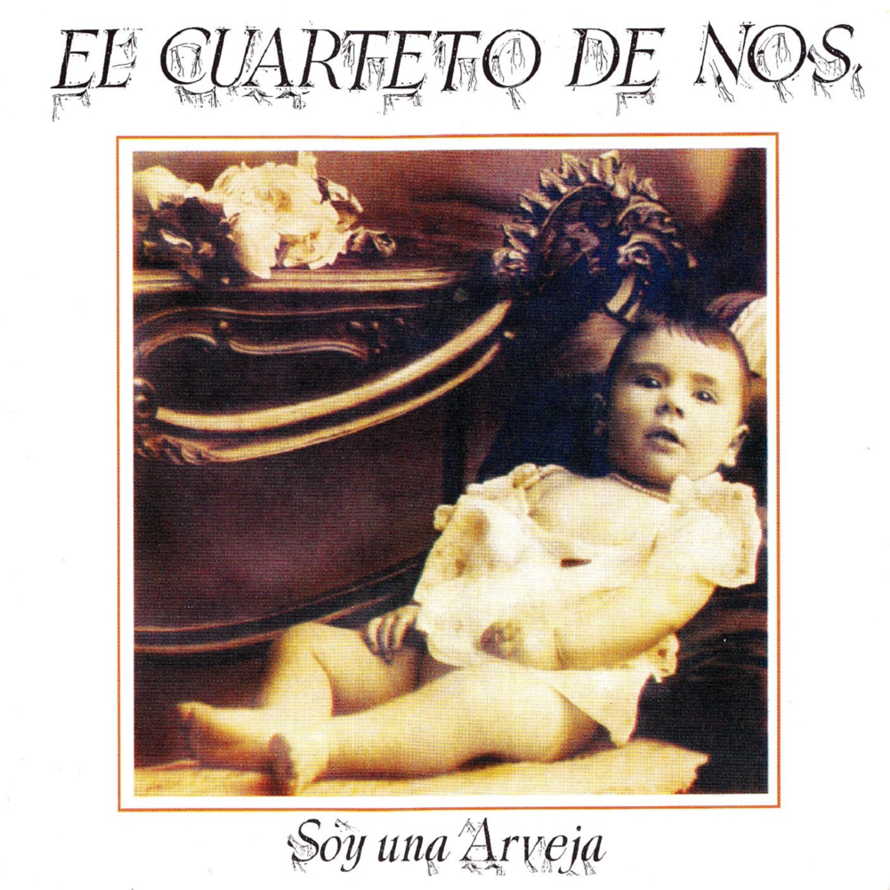
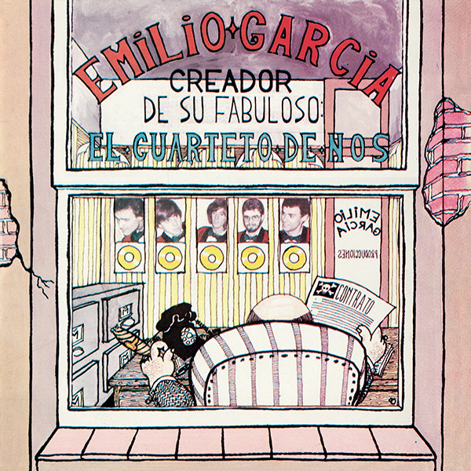
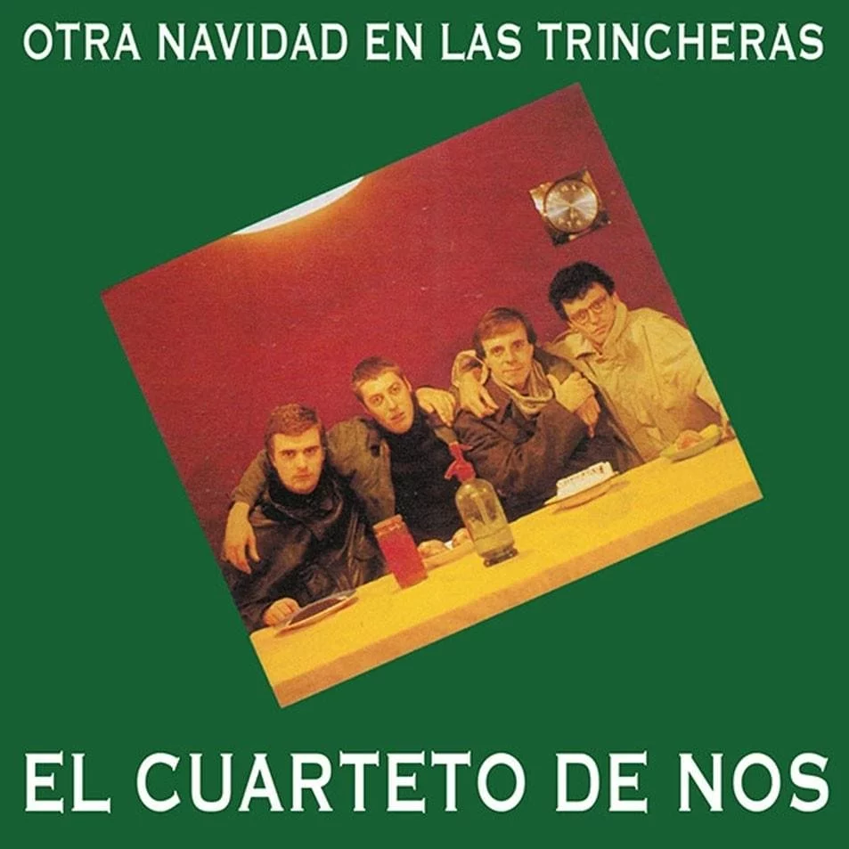
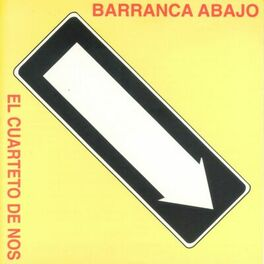

Alberto Wolf y el Cuarteto de Nos (1984)
Alberto Wolf y el Cuarteto de Nos es el nombre del primer álbum lanzado a su vez por la banda uruguaya de rock El Cuarteto de Nos y por el músico Alberto Wolf. La discográfica Ayuí les ofreció compartir un disco de vinilo con un lado para cada uno. El álbum fue lanzado en 1984, con Leonardo Baroncini como baterista invitado de El Cuarteto de Nos, ya que el baterista actual de la banda, Álvaro Pintos, no llegaría al grupo hasta unos meses después. El álbum fue publicado en vinilo, casete y una versión remasterizada y reeditada fue lanzada en CD.

Soy una Arveja (1987)
Soy una Arveja es el segundo álbum de la banda de rock uruguaya El Cuarteto de Nos, editado por la discográfica Orfeo y lanzado en 1987. Fue el primer álbum con el baterista Álvaro Pintos en la banda. En 2008, el disco fue remezclado y remasterizado en formato CD, con una notable mejora de calidad con respecto a la grabación original.
Historia:
En 1984 El Cuarteto de Nos, que en realidad era un trío formado por los hermanos Roberto y Ricardo Musso y Santiago Tavella, había editado un álbum compartido (un lado para cada artista) con el músico Alberto Wolf. Aunque se diferenciaban de otras propuestas por sus elementos roqueros, la propuesta del grupo estaba cercana a cierta música popular de la época en su variante más experimental y delirante, basada en un humor corrosivo y más directo que el de Leo Maslíah o Jorge Lazaroff.
Fue con este disco que la propuesta del grupo quedó más definida. El Cuarteto había dejado atrás su faceta más acústica y baladística, concentrándose en un formato más roquero. Musicalmente, la banda, parecía tener como influencia a Talking Heads, Modern Lovers o Devo entre otras bandas que se podrían ubicar entre la nunca muy definida new wave estadounidense. Este sonido roquero alineó a la banda con la movida del rock post dictadura aunque el grupo nunca encajó del todo en el movimiento, tal vez por sus influencias musicales más cercanas al pop vanguardista que al punk rock, tal vez por sus letras que acentuaban el costado humorístico, que el grupo ya había mostrado en su primera obra. En verdad, más que humor se debería hablar de una visión sardónica y llena de ironía para tocar temas bastante tabú en una sociedad que recién salía de once años de dictadura. El sexo, la locura, la vejez, la muerte, el egoísmo y la codicia son los temas principales de las letras de este disco.
El álbum empieza con "Enamorado de un Pollo", una canción insólita cuya letra relata exactamente lo que dice el título: una persona que se enamora de un pollo. Esa opción por lo diferente en clave humorística pero nunca en tono de burla está en todo el disco; a veces con un tono más surrealista, como en "El Guardián del Zoo", otras con un tono didáctico como en "Juan Bojorge Ocorbojón". Puede causar gracia los giros letrísticos de la canción "Soy una Vieja" pero se trata de una letra fuerte, y que pese a su humor negro, irradia empatía con el personaje retratado. Lo mismo sucede con otra de las grandes canciones del disco, "Andamio Pijuán", que tiene además una melodía a medio camino entre rap, que es a la vez insólitamente pegadiza. Pese a que la producción del álbum es bastante precaria, los arreglos de las canciones son muy notorios y elaborados con un gran destaque en los teclados de Andrés Bedó. En casi todas las canciones, los teclados con timbres distintos interactivos son el instrumento solista.
Este primer paso, la banda mostró una propuesta distinta a todas las que habían aparecido en esa década en la música popular pero que era continuadora de cierta tradición rioplatense y, a la vez, con una visión artística muy global y cosmopolita. Su carrera posterior mostraría que en Soy una Arveja ya estaban muchas de las cosas que el grupo continuaría por vías distintas en una larga trayectoria.
Portada:
En la tapa del álbum se puede ver la imagen antigua de una bebé, que en realidad fue la abuela de los hermanos Musso. El nombre del álbum y de la banda están abajo y arriba de la foto. En la contratapa del vinilo está lo que sería su ciudad imaginaria: La Cuidad de Tajo, en donde se ven los personajes que abarcan en las canciones que contiene el disco, mientras que en los bordes está el listado de temas.

Emilio García (1988)
Emilio García es el tercer álbum de la banda de rock uruguaya El Cuarteto de Nos. Fue lanzado en el año 1988 por la discográfica Orfeo.
Contexto:
El nombre del LP hace referencia al mánager imaginario que la banda tenía en esa época, así como "Tajo" refiere al origen imaginario de la banda, la ciudad de Tajo, en Uruguay. La presentación de este disco se realizó en un ciclo en el Teatro del Notariado, donde Los Bedronclos y Tuquito y Sus Cowboys (parodias realizadas por ellos mismos) actuaban de Teloneros.
En 1989, recorren el país con sus presentaciones y en diciembre de 1991 se presentan por primera vez en Argentina en la Segunda Bienal del Arte Joven.
Canciones del corazón (1991)
Canciones del Corazón es el cuarto álbum de la banda de rock uruguaya El Cuarteto de Nos. Fue lanzado en casete por el sello Orfeo en el año 1991. Con este álbum la banda ganó popularidad en su país y contiene sus primeros clásicos como Canción de amor, Corazón maricón y Al cielo no. El álbum fue presentado en el teatro El Tinglado.
En el álbum no está acreditado Andrés Bedó, debido a que se había ido a España durante las grabaciones del mismo.
Contexto:
El disco fue editado por Orfeo en 1991, y fue uno de los más importantes de su carrera hasta el momento, puesto a que contiene algunos de sus mayores éxitos hasta el día de la fecha como «Siempre que escucho al Cuarteto», «Corazón maricón» y «Al cielo no». El sonido es mucho más diverso y experimental que en sus anteriores trabajos (por ejemplo experimentan con ritmos como la cumbia), así como algunas letras, como la de «La familia Berrantes» o «Tabaré, That's Right», empiezan a tomar un nuevo rumbo que terminaría de germinar en su siguiente disco.

Otra Navidad en las Trincheras (1994)
Otra Navidad en las Trincheras es el quinto álbum de la banda de rock uruguaya El Cuarteto de Nos. Fue lanzado en CD por el sello Ayuí en 1994 y es considerado como uno de los álbumes más importantes del rock uruguayo. No sólo significó un nuevo rumbo, tanto lírico como en la musical en la banda, sino que alzó la fama de esta en todo el Uruguay llenando con él su primer Teatro de Verano, y es hasta el día de la fecha el disco de rock más vendido en el Uruguay, y el segundo en la música en general.
Grabación y Composición:
El Cuarteto de Nos había grabado sus tres discos anteriores para la discográfica Orfeo, siendo publicados en formato LP o casete. Cuando el grupo le plantea a la discográfica que desean editar en CD el siguiente, Orfeo decide no arriesgarse por ser una apuesta muy costosa y arriesgada para la cantidad de ventas que esperaban del álbum.
Por lo tanto la banda negoció con el sello independiente Ayuí / Tacuabé, que fue grabado por cuenta del grupo en el estudio propiedad de Riki Musso (guitarrista de la banda) llamado Tío Riki. Ayuí había publicado su primer compacto en 1993 del álbum Fines de Fernando Cabrera. Mauricio Ubal, coordinador del sello, escuchó las canciones del futuro álbum y decidió que era una buena decisión publicar el primer disco de rock uruguayo en disco compacto (también se publicó en casete). El disco se realizó con total independencia artística por parte del grupo.
La grabación de Otra Navidad en las Trincheras se llevó a cabo entre diciembre de 1993 y enero de 1994 en el estudio de grabación independiente de Ricardo Musso, Tío Riki.
Portada y Título:
La tapa del álbum es verde, con una foto de los cuatro integrantes del grupo colocada en el medio de forma inclinada y el nombre del álbum y del disco (en blanco) arriba y abajo de la foto. La fotografía fue tomada en la casa de los padres de Ricardo y Roberto Musso, siendo tomada por Riki usando el temporizador de la cámara. Momentos después del lanzamiento del disco Santiago Tavella expresó su disgusto ante la portada, calificándola como «horrible» durante una entrevista de prensa. En la contratapa del disco aparte de contener el listado de canciones contiene dibujos en cada pista, dichos dibujos hechos por Tavella. El nombre del álbum proviene de una frase que dice Macaulay Culkin en la película Home Alone 2: Lost in New York, frase que Roberto Musso escuchó en la televisión mientras miraba el filme.
Estilo Musical:
En el disco resurgieron todas las líneas artísticas desarrolladas en los cuatro discos anteriores: todo tipo de humor (popular, intelectual, absurdo, surrealista, sexual, negro), además de la veta punk y nihilista. También se recorren nuevos caminos desde la parodia musical.
Desde el punto de vista musical, se destaca la gran variedad. Se pueden encontrar canciones con influencias de música tropical («El calzoncillo a rayas»), baladas («Sólo un rumor», «Sólo soy un polaco enamorado»), pop («Bo cartero», «Ve con él»), punk rock («El primer oriental desertor»), música electrónica («El putón del barrio»), soul («Después de hacernos el amor»). El humor está presente en todo momento, ya sea desde las letras, sonidos que se escuchan detrás de lo que se canta, comentarios en medio de las canciones, o directamente parodias a determinadas canciones de distintos artistas.
Recepción:
Se hizo una primera edición de 500 copias en CD, la cual se agotaron rápidamente. En pocos meses el álbum ya estaba certificado como disco de platino y oro, lo que equivalía a 6 000 copias vendidas. El disco resultó ser uno de los discos más exitosos de todos los tiempos de la música uruguaya, llevando vendidas hasta hoy en torno a 20 000 copias. Las canciones del álbum sonaron en muchas emisoras de radio del Uruguay en 1994, traspasando las dedicadas al rock. «Bo cartero» (versión de la canción «Please Mr. Postman», con traducción de la letra hecha por Roberto Musso) puede considerarse como el primer hit del grupo. A partir de este álbum la banda dejó de ser una de culto seguida por algunos universitarios para convertirse en un fenómeno popular. Gracias al éxito cosechado por el álbum, en 1994 recorrieron todo el país realizando recitales y llegaron por primera vez a tocar en el Teatro de Verano de Montevideo.

Barranca abajo (1995)
Barranca abajo es el sexto álbum de estudio de la banda de rock uruguaya El Cuarteto de Nos. Fue lanzado en CD por el sello Ayuí / Tacuabé en el año 1995. El álbum mantiene un hilo conceptual entre las canciones que narra la vida de José Barrancas, un personaje ficticio que es el protagonista del disco.
El grupo se toma en broma su éxito y al disco editado en 1995 lo llaman Barranca abajo. Aunque la idea del título es ironizar con su fama, el álbum fue muy bien vendido en Uruguay. Este disco se destaca por ser más oscuro en lo musical que sus predecesores, haciéndose de algunos estilo como el punk, entre las canciones más destacadas están «Vino en mi jeringa», «No me puedo mover», «Barranca Abajo» y «El diablo en mi corazón».

Raro (2006)
Raro es el undécimo álbum de la banda de rock uruguaya El Cuarteto de Nos. Fue producido por Juan Campodónico y lanzado a la venta el 20 de mayo de 2006 por Bizarro Records.
Historia:
En 2004 la banda se reunió con Juan Campodónico para realizar el disco El Cuarteto de Nos, que contenía tres temas nuevos y quince versiones renovadas de temas clásicos. Se tenía como objetivo que llegara al público argentino, pero no se logró. El Cuarteto tenía desde hace tiempo seguidores de culto en Argentina, pero los sellos discográficos no mostraban interés en la banda. En Raro la banda volvió a grabar de la mano de Juan Campodónico. El disco, cuya portada es un retrato mezclado de los cuatro miembros, fue lanzado con pocas expectativas por Bizarro Records. Sin embargo, terminó siendo un disco bisagra, que permitió que la banda llegara popularmente a Argentina y también que empezara a tener repercusión en España, México y Colombia.
Estilo Musical:
En este disco El Cuarteto de Nos muestra una faceta diferente de los discos anteriores. Se aleja de la predominancia de los chistes sexuales y personajes bizarros para experimentar con canciones con rimas complejas y con un sonido más roquero. Las canciones «Yendo a la casa de Damián» y «Ya no sé qué hacer conmigo» fueron los dos hits principales del disco y los más difundidos. En ambos casos se maneja la complejidad en la rima. La primera pertenece al género de rock y en la segunda se fusionan milonga y el son. El último tema, «Autos nuevos», tiene la particularidad de que Riki Musso imita un solo de guitarra mediante la voz.

Bipolar (2009)
Bipolar es el duodécimo álbum de estudio de la banda uruguaya de rock El Cuarteto de Nos. Contiene once canciones inéditas y una nueva versión de «Me amo», del disco Cortamambo. Su lanzamiento oficial fue el 27 de septiembre de 2009, bajo el sello Warner Music. El primer sencillo del álbum fue «El hijo de Hernández». Es el último disco con la formación tradicional de la banda. Luego de la grabación de este álbum Riki Musso abandonó el grupo, sin siquiera participar en las presentaciones en vivo de las nuevas canciones. Se incorporaron a El Cuarteto de Nos Gustavo Antuña en guitarra y Santiago Marrero en teclados.
Filtración de Bipoplar:
A fines de abril de 2009 se filtró en la página web Taringa! gran parte del disco Bipolar, mientras la banda aún estaba trabajando en él. Juan Campodónico, productor artístico, se lamentó mucho sobre lo ocurrido y dijo que esto estaba "dañando mucho el trabajo", tanto del grupo como de la gente que grabó el disco.2 Existen algunas diferencias entre la versión filtrada y la versión final. En la versión final, la línea "Si no se van voy a saltar" en "Doble Identidad" se encuentra recortada al igual que el final en "Primavera", la versión filtrada del tema "Breve descripción de mi persona" no contiene una introducción, la portada de la versión filtrada contiene el título del álbum en un fondo negro, las pistas en esta se encuentran en un orden diferente y "Mi Lista Negra" no está presente.

Porfiado (2012)
Porfiado es el decimotercer álbum de estudio de la banda de rock uruguaya El Cuarteto de Nos. Contiene doce canciones inéditas. Fue lanzado el 25 de abril de 2012 bajo el sello Warner Music. El primer sencillo del álbum fue «Cuando sea grande», cuyo video musical empezó a ser transmitido semanas antes del lanzamiento del disco. Para el pre-lanzamiento fueron editados mini-adelantos de las canciones «Buen día Benito», «No te invité a mi cumpleaños» y «El lado soleado de la calle», que recibieron miles de visitas en el canal oficial de YouTube de la banda, convirtiendo a Porfiado en uno de los discos más esperados de la banda, tanto por los fanes como por los medios de difusión, debido al gran éxito de sus dos placas anteriores y con el antecedente de la filtración de la totalidad de su álbum anterior en el sitio web Taringa! semanas antes de ser publicado, mientras todavía la banda trabajaba en el mismo.
Lírica y Melodías:
El álbum se caracteriza por contener una amplia variedad de estilos y géneros musicales, al punto de que la revista Rolling Stone no pudo definirlo como «un disco de género». Se destaca, sin embargo, la influencia general del hip hop en todo el disco. Roberto Musso estuvo a cargo de la composición de la mayoría de las canciones. Abre la obra «Algo mejor que hacer», con una base ska punk; le sigue «Cuando sea grande», hip hop con amplias líneas en su letra y un estribillo con un marcado efecto auto tune. «Buen día Benito» cuenta la historia de un hombre obsesionado con un ex compañero del jardín de infantes y de toda la vida; un flow de rap se combina con un coro amplificado de fondo, y cuya letra menciona desde las obras de Tolstoi hasta la revista Playboy. «Enamorado tuyo», compuesta y cantada por Santiago Tavella, es una cumbia que resalta en comparación con el resto de las canciones por su estilo bailable a pesar de ser melancólica. «Sólo estoy sobreviviendo» mezcla letras de tango con frases icónicas del cine.

Habla tu espejo (2014)
Habla tu espejo es el nombre del decimocuarto disco del grupo musical uruguayo El Cuarteto de Nos. Fue lanzado el 6 de octubre del 2014 bajo el sello Warner Music. Sus sencillos son "No llora", canción compuesta por Roberto Musso para su hija Federica Musso, "Cómo pasa el tiempo" y "Roberto".
Información del Disco:
Habla tu espejo es un álbum que rompe con una etapa de El Cuarteto de Nos, posterior al efecto de la trilogía de los discos anteriores (Raro, Bipolar y Porfiado) dado a la composición de sus canciones, esto se refleja en canciones como "No llora" y "21 de septiembre", ambas escritas por Roberto Musso, la primera dedicada a su hija Federica y la segunda a su madre y su abuela, quienes padecían de alzheimer. 21 de septiembre hace referencia además a la fecha del día mundial de esta enfermedad.
Por otro lado, las letras de las canciones "Roberto" y "Habla tu espejo" discurren bajo una perspectiva personal, pero hablando en segunda o tercera persona. También se ha criticado a la canción "Caminamos", por su ritmo que se asemeja a lo urbano; sin embargo, el mismo Musso afirma que "Roberto" y "Whisky en Uruguay" tienen también un toque urbano.
Cabe señalar que "Whisky en Uruguay" es un cover en español de la canción irlandesa "Whiskey in the Jar" y es cantada por Santiago Tavella.
“Nunca pude separar al Roberto persona del Roberto hacedor de canciones. Siempre me ha gustado hacerlo desde las emociones del momento que me toca vivir como persona. Y en eso cuento los años que vas cumpliendo y las experiencias que vas acumulando y cómo pasa la vida para uno y para las personas alrededor”.

Apocalipsis zombi (2017)
Apocalipsis Zombi es el decimoquinto álbum de estudio de la banda de rock uruguaya El Cuarteto de Nos, fue publicado el 12 de mayo de 2017 vía plataformas digitales y es el primer disco de la banda en ser producido por Cachorro López y bajo el sello de Sony Music Argentina.
Es además el tercer CD grabado por la nueva alineación de cinco integrantes tras la salida del guitarrista Riki Musso en 2009. También es el primer disco en el que Santiago Tavella no canta ni compone alguna canción.
Según Roberto Musso (líder de la banda y único compositor del trabajo) es un disco cuyo apartado lírico entra en el género de "realidad fantasiosa" pues aborda tópicos de la vida real mediante seres fantásticos (como zombis, gauchos con superpoderes, etc.)

Jueves (2019)
Jueves es el decimosexto álbum de estudio de la banda de rock uruguaya El Cuarteto de Nos, publicado el 16 de agosto de 2019 vía plataformas digitales, bajo el sello de Sony Music Argentina. Contiene nueve canciones en total. Antes de la salida del disco se adelantaron dos canciones: el primer sencillo, "Punta Cana", fue estrenado junto al videoclip el 29 de marzo de 2019, y el segundo sencillo, "Contrapunto para humano y computadora", fue estrenado junto al videoclip el 28 de junio de 2019. En el día del lanzamiento del álbum fue lanzado el sencillo y videoclip de "Mario Neta". El álbum fue presentado en Buenos Aires el 20 de septiembre del mismo año en el Luna Park, iniciando una gira por Latinoamérica.

Lámina Once (2022)
Lámina Once es el decimoséptimo álbum de estudio de la banda de rock uruguaya El Cuarteto de Nos, publicado el 8 de julio de 2022 vía plataformas digitales, bajo el sello de Porfiado Records. Contiene ocho canciones en total. Antes de su lanzamiento, cuatro sencillos fueron lanzados: «Fiesta en lo del Dr. Hermes», «La ciudad sin alma», «Maldito Show» y «Rorschach» (este último siendo publicado horas antes del lanzamiento del álbum).
Antecedentes:
En septiembre de 2021, mediante sus redes sociales, la banda demostró que están preparando nuevo material de estudio. El 23 de septiembre lanzarían el video musical de «Fiesta en lo del Dr. Hermes» en YouTube. En febrero de 2022 lanzarían el segundo sencillo, llamado «La Ciudad Sin Alma». Fue lanzado por medio de un conversatorio con el arquitecto y artista visual Alfredo Ghierra en YouTube.
Más tarde, en mayo de 2022 lanzarían su nuevo sencillo, «Maldito Show», el cual primero fue lanzado por medio de un vídeo en el que se parodiaba un noticiero, con varias referencias a otros temas del Cuarteto; luego, fue subido un video con las letras de la canción acompañadas de imágenes y animaciones acordes con la letra del tema. En lo referente al disco, en una entrevista con el medio argentino Clarín en el marco del festival Quilmes Rock 2022, Roberto Musso aseveró que el nuevo disco del Cuarteto de Nos saldría en julio y bajo el nombre de Lámina Once. A finales de junio de 2022, la banda empezaria a publicar periodicamente adelantos de la producción del disco a través de sus redes sociales. El 4 de julio se anunciaria el videoclip de la canción Rorschach, que sería publicado el 7 de julio.
Para la promoción del álbum, la banda iniciaria en noviembre una gira que los llevaria por Latinoamérica y Europa durante 2023. Además, lanzarian un pocast de 9 episodios titulado "La lamina que no esta", donde explicarian en cada episodio una canción de manera individual junto a un invitado.